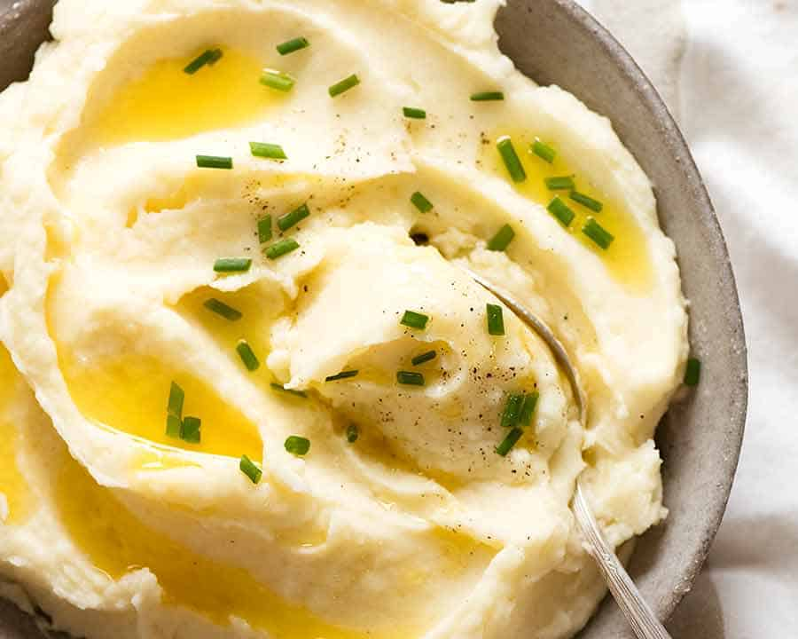

Fried Chicken Recipe List

Buttery mashed potatos are a great comfort food for a cold day, plus
potatoes are incredibly affordable
Below is a very simplistic recipe
- Potatos
- Salt and Pepper
- Masher
- Butter
- Boil water with some salt and throw potatos in
- Once soft enough to poke through with a fork dump into a bowl and mash
- Put butter, salt and pepper and mix